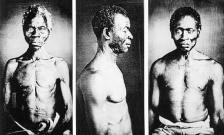
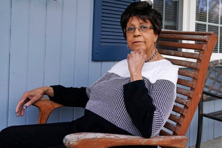
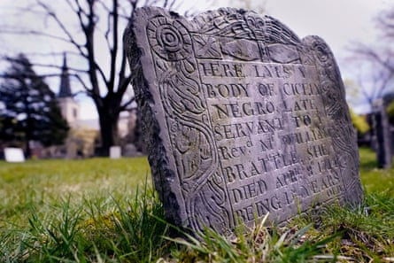
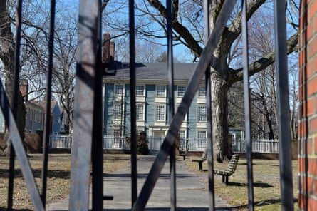

J ordan Lloyd had been praying for something big to happen. The 35-year-old screenwriter was quarantining in her apartment in North Hollywood in June 2020. Without any work projects to fill her days, she picked up the novel Roots, by Alex Haley, to reread.
The novel tells the story of Kunta Kinte, Haley’s ancestor, who is captured and sold into slavery in the Gambia and then brought to Virginia , where he is forced to labor on a plantation. It was adapted into an Emmy-award winning television series in the 1970s, and while reading it again, Lloyd thought to herself, “Wouldn’t it be nice if they could make another Roots?”
A few days later, out of the blue, she received an email from an undergraduate student at Harvard University in Cambridge, Massachusetts. The email was short. The woman introduced herself as Carissa Chen, a junior at the college studying history. She was working on an independent research project to find descendants of enslaved people connected to the university. By using historical records and modern genealogy tools, she had found Lloyd.
“I have reason to believe through archival research that you could be the descendant of Tony and Cuba Vassall, two slaves taken from Antigua by a founding member connected to Harvard University ,” the email read. “Are you available anytime for a call?”
The note linked to a website containing a family tree that Chen had created, tracing the lineage of people enslaved by Isaac Royall Jr, an Antiguan planter and businessman whose endowment would eventually create Harvard Law School.
Chen hadn’t expected to find any living descendants, she told the Guardian, but through dogged research, she managed to uncover 50 names and found Lloyd through an old website she had made when she had first moved to Los Angeles.
“It all felt too specific to be a scam,” Lloyd recounted, so she agreed to a call that would eventually blow open everything she thought she knew about her family history, linking her with one of the nation’s most prestigious institutions and launching a phase in her life that would be colored with equal parts joy and pain.
US universities and the legacy of slavery
Though it contradicts a common perception of colonial New England, enslaved people were brought to work in northern cities in North America as well. In her book New England Bound, the historian Wendy Warren records the remarks of one European traveler who noted in 1687 that “there is not a house in Boston, however small may be its means, that has not one or two [enslaved people]”.
As the country’s oldest and wealthiest university, Harvard’s history is inextricable from the history of transatlantic slavery. The enslaved labored in campus buildings, university presidents and professors owned people forced into bondage, and the school’s wealth grew through a circle of donors intimately connected to the plantation system in the Caribbean, the American south and the trafficking of enslaved Africans across the Atlantic.
Harvard began, informally, to research its relationship to slavery as early as 2007, when the history professor Sven Beckert started leading undergraduate research seminars such as the one Chen took. In 2016, then Harvard president Drew Faust acknowledged the university was “directly complicit” in slavery and, in 2022, the university released an official report, Harvard & the Legacy of Slavery , which detailed its history over more than a hundred pages.
Photographs of enslaved people in the US, possibly the oldest known in the country, were discovered in the basement of a Harvard University museum in 1977.Photograph: Bettmann Archive
Harvard is not the only academic institution with this burden. Currently more than 100 universities across the world are investigating their ties to slavery, the vast majority of which are in the US. A small subset of the universities researching their ties to slavery – approximately five – have committed to conducting genealogical research and identifying living descendants. Religious denominations such as the Episcopal church and the Evangelical Lutheran church and more than a dozen cities and four states have also begun researching their legacies of slavery. The California state reparations taskforce published a 1,000-page report two years ago, and state legislators have been developing – and passing – reparations-related initiatives.
The Guardian, founded in 1821 in Manchester, England, began its own process in 2020, when its sole owner, the Scott Trust , commissioned independent academic researchers to uncover its links to transatlantic slavery. It revealed that the newspaper’s founder, John Edward Taylor, and nine out of 11 of his financial backers had direct ties, mainly through Manchester’s cotton industry . In 2023, the Scott Trust apologized for its role in transatlantic slavery and committed to a 10-year restorative justice program, with millions earmarked for descendant communities. That year, the Guardian also launched an ongoing series called Cotton Capital , which explores the legacies of slavery globally.
The 2022 Harvard report included a list of recommendations by the presidential committee: develop educational partnerships with historically Black colleges and universities, create a public memorial, and – perhaps most contentiously – identify living descendants of people enslaved by university staff, leaders and faculty. The announcement was accompanied by a $100m endowment for “implementation”.
The person the university tapped to lead the descendant research is a man named Richard Cellini, who has a kind of mythological status in the world of institutional accountability and slavery research. By his own admission, his skill lies primarily in selecting talented researchers, and “keeping them happy”. The university, it seemed, was fully committed to beginning a process of discovery and atonement, putting resources and brainpower behind a project that could set the tone for institutions around the country, and the world. If successful, Harvard could demonstrate that truth-telling and reconciliation are possible on a large scale, that an institutional culture around silence and historical revisionism can be overturned, and that light can shine into even the deepest cracks. But that would ultimately not be the case. Not yet, at least.
‘A source of guilt and shame for Harvard’
When I visited Cellini in the archives of the Harvard Business School in mid-February, he was bent over a 19th-century ledger book, trained on a set of records with a magnifying glass. He is a trained attorney and tech entrepreneur, and though jovial and quick to joke, he becomes stoic when speaking about his research.
In 2015, he started an independent project at Georgetown University in Washington DC to locate the descendants of 272 enslaved people sold by Jesuit leaders in the mid-1800s to raise money for the university. Cellini said he was driven by a sense of moral outrage upon learning about the sale, as well as a curiosity to see what he could find. Along with 10 other researchers, they would eventually locate more than 10,000 direct descendants. Cellini’s effort, called the Georgetown Memory Project, remains independent although the university has given preferential consideration during the admissions process to descendants and created a “reconciliation fund’ for their benefit. In the winter of 2022, before the Harvard report was made public, Cellini said he was approached by the former president of the school, Larry Bacow, and a dean, Tomiko Brown-Nagin, who asked him if he could do the same thing for Harvard.
When he started the research, Harvard had already identified the names of 70 people that had been enslaved with ties to the university. Over the course of the past three years, working alongside American Ancestors, the country’s pre-eminent genealogical institute, Cellini and his researchers have identified more than 900 people that had been enslaved by university affiliates (faculty, staff and people in leadership positions) and nearly 500 of their direct living descendants.
It wasn’t long after the work began to pick up steam that Cellini started running into trouble.
In March 2023, he said he was asked to meet with the project’s executive director, Roeshana Moore-Evans, and the Harvard staff member overseeing the initiative, the public health professor and vice-provost for special projects, Sara Bleich.
These informal meetings were held in a boardroom in the student center, a tall glass building overlooking the gates of Harvard Yard. It was here and during extended phone calls that Cellini claims he was told repeatedly by Bleich “not to find too many descendants”.
“At one point the fear was expressed that if we found too many descendants, it would bankrupt the university,” he said.
Roberta Wolff, a descendant of Tony, Cuba and Darby Vassall – people enslaved by Harvard benefactors in the institution’s first decades – on the front porch of her family home in 2022 in Bellingham, Massachusetts.Photograph: Charles Krupa/AP
Cellini told Bleich that was “ludicrous”, he said. Was he supposed to falsify the evidence, to destroy it, to ignore it? “I asked for guidance, and the answer was that she didn’t know,” he said, “but we shouldn’t report too many descendants.”
Bleich denies this. “The university never issued a directive to him to limit the number of direct descendants that could be identified through the work,” she told the Guardian during a phone interview. Moore-Evans declined to comment on the meetings.
In the process of trying to get additional funding for the project, arguing that the amount of work had increased tenfold because of all the additional names that were being uncovered, Cellini met with the finance director for the president’s office, Patricia Harrington, this past fall.
Harrington wouldn’t give him a clear answer about his funding request, telling him, “Unfortunately you keep finding more slaves,” he said, and that “every new person is a source of guilt and shame for Harvard”. A spokesperson for the university said: “Any assertion that Patricia Harrington disparaged the work of the Legacy of Slavery Initiative, including descendant research, is false.” Even though Cellini was eventually given a budget for 2025, albeit a fraction of what he had asked for, the university would soon halt his work entirely.
A family’s rich history tied to the founding of the US
The early days of discovery were a golden time for Lloyd and her immediate family. Together with Lloyd’s father, Dennis, and Chen, they would meet over Zoom and swap stories. Her dad was sharing parts of family history that Lloyd had never heard before: about his soft-spoken mother and his dad, who owned a flower shop in a neighborhood of Boston called Charlestown.
“People will open up to a stranger in a way that’s more honest and unfiltered, wanting to be thorough in a way that you would never with your family,” Lloyd said. Chen, in turn, detailed the findings of her research to the Lloyds and they began to fill in their histories, tracing connections to the colonial period and height of the “triangular trade”.
Lloyd’s ancestor seven generations back, Cuba Vassall, was three years old when she was forcibly moved from Antigua to a suburb of Boston along with her family by Isaac Royall Jr, in 1737. The Royalls were the largest slave-owning family in the Massachusetts Bay Colony, owning nearly 70 enslaved people who labored on a 500-acre plantation just north of Boston, as well as controlling more than 100 people on their plantation in Antigua.
Before long, Lloyd’s ancestors were transferred to another wealthy Cambridge family, the Vassalls, for whom they labored in an elaborate Georgian mansion currently known as the Longfellow House, near the campus of the then growing Harvard University.
The Vassalls owned plantations in Jamaica where more than a thousand people were enslaved. John Vassall was a Harvard graduate, along with his brother Lewis, who once paid for a portion of his tuition with a large barrel of sugar, one of the most lucrative commodities produced by enslaved people. Cuba’s original enslaver, Isaac Royall Jr, didn’t have any direct ties to Harvard while he was living, but he endowed a professorship in his will, likely to ensure his legacy would live on as a member of the colonial elite. The seal of Harvard Law School was the Royall family crest until 2016, when students protested to demand its replacement. The Royall professorship was retired in 2022.
At the Longfellow House, Cuba met and married a man named Tony, originally from Jamaica, who was also enslaved by the Vassalls. They had six children, including Lloyd’s ancestor Darby. During the American revolutionary war, the royalist Vassalls fled and the house was occupied by George Washington, who used it as his headquarters during the siege of Boston. According to one anecdote, Washington asked then six-year-old Darby to work for him, who replied he wouldn’t work without wages.
After the war, Tony and Cuba petitioned the state to stay in a small dwelling on the property, where they cultivated a piece of land for farming. They had both spent 60 years of their life in slavery, Tony wrote in the 1781 letter, and “though deprived of what makes them now happy beyond expression yet they have ever lived a life of honesty and have been faithful in their master’s service”.
He appealed to the court’s sense of morality, writing: “They shall not be denied the sweets of freedom the remainder of their days by being reduced to the painful necessity of begging for bread.” His petition to stay in the house was refused, but Tony was given an annual pension, one of the earliest examples of a formerly enslaved person receiving compensation.

The Isaac Royall house and slave quarters in Medford, Massachusetts.Photograph: Paul Marotta/Getty Images
Tony’s son Darby went on to become an important figure in the burgeoning free Black community of Boston. He was an activist throughout his life, supporting the abolitionist movement, becoming a founding member of the African Society of Boston and adding his name to a state petition to protect Black people against the Fugitive Slave Act, along with his daughter and son-in-law.
At the end of his life, Darby chose to be buried in the Vassall family tomb underneath Christ Church in Cambridge, which Lloyd and her family went to visit last June. The tomb is in the basement, in a low-ceilinged crypt locked behind heavy black metal doors, and a couple inches of a curved brick structure, peeking above the granite dust floor, is the only indication. A dried flower arrangement that Lloyd left is still there, a tidy pile of lavender, white chrysanthemum and clover.
Making these connections and being able to visit her ancestor’s grave brought Lloyd a deep sense of “internal certainty and peace and comfort and groundedness”, she said. “I would want that for everyone whose family is somehow affiliated.” Yet the joy and excitement comes with a “deep sadness”.
“Why hasn’t this been resolved?” she wondered aloud during an interview phone call. “Why did no one in my family know?”
Lloyd’s only contact from the administration, she said, was an “icy” interaction with Brown-Nagin during a group call, and she has heard nothing since. “Naively, I was expecting them to be very welcoming and excited to facilitate discussion,” she said. “I was hoping they would be warmer, more open to reconcile the long history.” The university says it has not begun the outreach process.
Since the initiative was announced, the university has given out more than $4m in grants to local organizations and built out partnerships with historically Black colleges and universities, such as the Du Bois Scholars Program .
“This is by far the hardest job that I’ve had,” Bleich, who oversees the Harvard Legacy of Slavery initiative, said. “We are very serious about this, and we are very sincere.”
Firings, resignations and attempts to ‘dilute and delay’ research
In late January, as he was pulling his car into the parking lot of Harvard Business School, prepared to begin another day of research in the university archives, Cellini received a call from an HR person who said he and his team were fired, effective immediately.
He was never given an explanation, he said, and a university spokesperson told the Guardian “we cannot comment on personnel matters”. The genealogy research, the university announced after Cellini’s firing, would be continued through an “expanded partnership” with American Ancestors, the genealogy non-profit that had already been working closely with Cellini’s team.
“They’re the world’s best genealogists,” Cellini said. Based on his team’s research in the Harvard archives identifying school leaders, faculty or staff who owned enslaved people and the names of the people they enslaved, American Ancestors would then search “downstream”, as Cellini put it, for living descendants. In this new agreement, the organization has taken over all aspects of the research.
The initiative received its first public blow last spring, when two university professors on the committee to create a memorial stepped down, saying in a letter obtained by the student newspaper that the university had attempted to “dilute and delay” their efforts to reach out to descendants. The committee was formed in 2023, based on one of the recommendations of the Harvard & the Legacy of Slavery report to “honor enslaved people through memorialization”. In a statement made to the student newspaper , a spokesperson for the university said it “take[s] seriously the co-chairs’ concerns about the importance of community involvement and of taking steps that will enable Harvard to deeply engage with descendant communities”.
A couple weeks later, the executive director of the initiative, Moore-Evans, stepped down, after reporting conflicts with the university administration to HR. She told the Guardian that she left for “personal reasons”.
The grave of Cicely, a 15-year-old ‘Negro servant’ of the Rev William Brattle, a treasurer at Harvard College, at the Old Burying Ground just outside Harvard Yard on 27 April 2022, in Cambridge, Massachusetts.Photograph: Charles Krupa/AP
Cellini suspects the reason he was fired is simple: “We found too many slaves.” The university was afraid that identifying descendants would bankrupt the university and so each name that his team identified was “expensive”, he said. The work that he oversaw is “just the tip of the iceberg”, he added, estimating that the numbers of living descendants could be about 10,000 people.
Cellini had just come back from Antigua a couple days prior, where his team had visited the site of the Royall plantation as well as four other plantations with ties to the university. They also found a hundred additional names of enslaved people with ties to the university in public archives, he said.
Cellini and his team met with the prime minister and governor general of Antigua, who had expressed interest in working with the university to explore this connection. Cellini said he detailed his meetings with the politicians to the university, but those requests were never answered and he was fired shortly after.
The Antiguan ambassador to the US, Sir Ronald Sanders, wrote a letter to the university after learning that Cellini was fired, writing that the decision was made “without consultation or notification”. The country wants “real engagement and meaningful action that befits the benefits that Harvard derived”, he wrote.
“We would not expect a cash payment from Harvard,” a spokesperson added. “However, so well-endowed a university with expertise in a number of areas can be helpful to our country.” The cabinet discussed the possibility of Harvard funding ancestry research to identify descendants of Antiguans that were brought to colonial Massachusetts, and seeking the university’s assistance in public health matters to address the high rates of chronic illness on the islands. A spokesperson for Harvard said a letter had been sent in response, but refused to elaborate. The spokesperson for Antigua said, “I have not seen a response,” and could not confirm if a response had been received.
Lives ‘spent and exhausted’ for the production of sugarcane
The Royall plantation, which likely stretched across 200 acres down to Port Royal Bay, enslaved more than 100 people. Only the ruins of the sugar windmill remain, on private property.
The stone structure stands a hundred feet tall on a grassy field bordering some woods. Here, enslaved people lived and worked on a plantation, feeding sugar cane into metal rollers through a dangerous and physically exhausting process to make syrup.
“It’s pretty visceral,” Cellini said about visiting the site. “This is where lives were spent and exhausted and consumed for the production of sugarcane, for the wealth of the British empire.”
The Isaac Royall House and Slave Quarters in Medford, Massachusetts.Photograph: Paul Marotta/Getty Images
Ever since being contacted by Chen, Lloyd has felt the weight of her family history and a sense of responsibility. Her ancestors repeatedly petitioned for their freedom, for their rights and their humanity. Darby and his sister Flora had both been separated from their family by their enslavers as young children. Tony Vassall bought his daughter’s freedom, and when his enslaver died by injuries sustained at the battle of Bunker Hill, six-year-old Darby walked 10 miles home to his family. The family had been staunch abolitionists and activists, suffered through bondage, and fought for their freedom. Lloyd struggles with where that leaves her.
“I just don’t know where to begin,” Lloyd said. She considers taking to social media, calling the administration and making demands. Should she protest? She doesn’t know. Lloyd’s sister, who declined to be interviewed for this article, went to Antigua and Lloyd said she’s also interested in going. “I would go anywhere to talk to anyone at this point,” she said. “Except Harvard, because there’s no one I really trust there right now.”
“I feel like I’m still close to the explosion,” she said. “My ears are still ringing.”